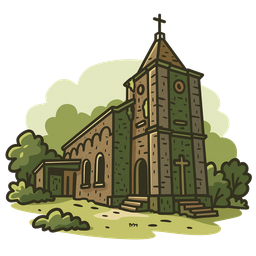

Bokor Half Day
Visit Bokor Mountain’s historical sites from the French colonial era and soak in stunning summit views.
Yeah Mao Statue
29-meter monument on Bokor Mountain honoring Yeay Mao, a Neak Ta guardian figure revered by locals.
Black Palace
Former summer residence of King Norodom Sihanouk; weathered red-stone rooms and jungle views give it a haunting, photogenic feel.
Old Catholic Church
1920s hillside church that survived wars and storms; simple brick interior and misty vistas make it a classic Bokor stop.
Popokvil Waterfall
Two-tier cascade whose name means “swirling clouds”; lively in rainy season, calm pools in dry months—nice for a short stroll and photos.
Five-Boats Monastery (Wat Sampov Pram)
Mountaintop pagoda from the 1920s named for five boat-shaped rocks; peaceful shrines and sweeping views over jungle and sea.
$35
first rider
+$25 each additional · Max 3